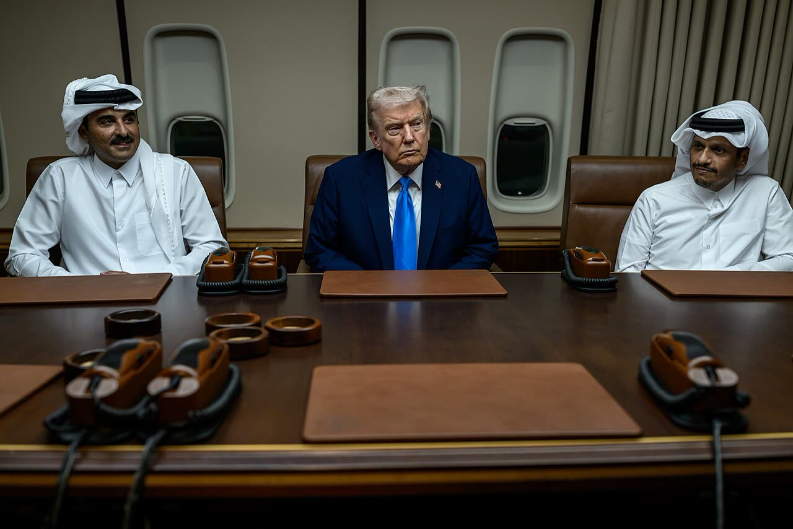

Trump: l'Iran militarmente è «finito», nuovi attacchi Usa «improbabili»
Finita per i raid, non per Hormuz: il blocco resta e i transiti sono circa il 65% sotto l'anteguerra. Per chi paga l'energia conta lo stretto aperto, non la parola «finita».
Redazione Contrappunto · aggiornato il 10.11.2026

.jpg){kind=link}
Dal 28 febbraio 2026 Stati Uniti e Israele sono in guerra con l'Iran, che ha chiuso lo stretto di Hormuz, la via d'acqua da cui passano petrolio, gas e fertilizzanti (Al Jazeera). Lunedì 9 novembre Donald Trump ha ricevuto a Washington il primo ministro del Qatar, Mohammed bin Abdulrahman Al Thani, che è anche ministro degli Esteri e fa da mediatore tra Washington e Teheran. Dopo l'incontro, in una conferenza stampa a sorpresa, Trump ha detto che l'Iran è «effettivamente finito» sul piano militare e che nuovi attacchi americani sono improbabili. Non ha però dichiarato chiusa la guerra, e il blocco dei porti iraniani continua. Ieri avevamo scritto di Rubio, che aveva difeso la guerra come «necessaria»: oggi la domanda è cosa cambia per Hormuz, il petrolio e i prezzi dell'energia.
Vedi di più: 5 parole spiegate, cosa si racconta
Cosa si raccontaLe testate lette titolano la frase di Trump: per Breitbart l'Iran è «effectively over» dopo i colloqui con il Qatar, per Al Jazeera la guerra è «effectively over» dopo l'incontro con il premier qatariano, per la BBC nuovi attacchi sono «highly unlikely». Nei testi, però, restano il blocco navale, una nuova operazione sulle vie di terra e il rifiuto di Teheran. Del prezzo del petrolio parla solo la BBC. [Breitbart] [Al Jazeera] [BBC News] [Anadolu Agency]
- Blocco navale
- La Marina americana ferma le navi dirette ai porti iraniani o in uscita. Trump lo chiama «il più grande blocco navale della storia»: continua, dice, a richiesta dei vicini dell'Iran (Al Jazeera).
- Task Force Iron Gate
- Operazione del comando militare americano per il Medio Oriente (Centcom) lanciata nel fine settimana: intercetta armi, tecnologia a doppio uso e merci sanzionate che passano dai confini di terra dell'Iran e dal Mar Caspio (Breitbart, Al Jazeera).
- Stretto di Hormuz
- Il braccio di mare tra Iran e Oman che collega il Golfo Persico all'oceano: la rotta del petrolio e del gas del Golfo (Al Jazeera).
- UKMTO
- Centro della Marina britannica che raccoglie gli avvisi di sicurezza per le navi nella regione e conta i transiti; i dati che citiamo li riporta Gulf News (non abbiamo letto il rapporto).
- Brent
- Il prezzo di riferimento internazionale del petrolio, in dollari al barile. Non è il prezzo alla pompa: lo influenza, con qualche giorno di ritardo.
- Lunedì 9 novembre, dopo l'incontro con il premier del Qatar, Trump ha detto che l'Iran è «effectively over» sul piano militare e che nuovi attacchi sono «quite unlikely»; blocco navale e Task Force Iron Gate restano (Breitbart, Al Jazeera, BBC).
- Teheran la prende male: il segretario del Consiglio supremo di sicurezza nazionale, Mohsen Rezaei, parla di «fake news» su colloqui «immaginari» (Al Jazeera, Breitbart).
- Brent a 91,50 dollari, più di 1% in meno (BBC); transiti a Hormuz circa il 65% sotto l'anteguerra (UKMTO, via Gulf News). Dati italiani su carburanti e bollette: non letti oggi.
Per Breitbart, Al Jazeera, la BBC e il Jerusalem Post la notizia è la frase di Trump, «Iran militarily is effectively over»; il Jerusalem Post aggiunge che le sue cifre sulle navi distrutte non hanno prove indipendenti. Ma «finita» vale per i raid: il blocco navale e la Task Force Iron Gate restano, e Teheran, con Rezaei, parla di «fake news». Il Brent a 91,50 dollari (BBC) misura la fiducia dei mercati, non il petrolio che passa: a Hormuz i transiti sono circa il 65% sotto l'anteguerra (UKMTO, via Gulf News). Dopo il «necessaria» di Rubio di ieri, il coro regge a metà. Per chi paga l'energia, la guerra finisce quando lo stretto è libero. [1] [2] [3] [4] [6]
La verifica punto per punto4 passaggi, 8 fonti
Qui sotto ogni cosa scritta sopra, una per una, con le fonti. Confermato: lo dice un documento originale o più fonti lette. Plausibile: lo riportano fonti serie, ma non abbiamo letto l'originale. Discordante: le fonti danno numeri diversi, e diciamo quali. Ipotesi e Opinione sono il nostro ragionamento, separato dai fatti.
Cosa ha detto Trump, e cosa risponde Teheran
Lunedì 9 novembre, dopo l'incontro con il primo ministro del Qatar Mohammed bin Abdulrahman Al Thani, Trump ha detto in sala stampa che «Iran militarily is effectively over» e che gli Usa tengono lo «status quo» a richiesta dei vicini dell'Iran (Qatar, Arabia Saudita, Emirati, Bahrein e Kuwait, per Al Jazeera): blocco navale e Task Force Iron Gate. Su Truth Social ha scritto che un cambio di rotta «seems to be quite unlikely»; per la BBC nuovi attacchi sono «highly unlikely»; l'esercito resta «locked and loaded». Non dichiara finita la guerra perché gli alleati nella regione devono essere al sicuro (Jerusalem Post). Per Rezaei, che guida il Consiglio supremo di sicurezza nazionale iraniano, sono «FOLD YOUR HAND. STOP manufacturing FAKE NEWS about imaginary talks»; il presidente Masoud Pezeshkian dice invece che l'Iran è aperto a trattare, ma non cederà alla forza (Al Jazeera).
Hormuz e prezzi: cosa dicono i dati letti
Martedì pomeriggio in Asia il Brent perdeva più dell'1%, a 91,50 dollari, e il greggio quotato negli Usa 85,82; i prezzi erano già scesi molto dopo le elezioni americane (BBC). Per l'UKMTO, citato da Gulf News, nell'ultima settimana i transiti a Hormuz sono stati 170 in uscita e 155 in entrata, circa 65% sotto l'anteguerra; l'UKMTO avverte che non può verificare tutti i dati americani. Negli Usa la benzina è a 4,0093 dollari al gallone, il gasolio è sceso di circa 10 centesimi in un mese e costa 2,44 dollari in più di un anno fa (AAA, via CBS). Trump ammette che «short term, probably bad for me» perché la gente vuole costi dell'energia più bassi (Jerusalem Post).
Tra le righe
Il calo del Brent premia le parole di Trump più di quanto premi il petrolio che passa dallo stretto.
Ragionamento: Il Brent scende ancora dopo le frasi di Trump (BBC) e per la CBS l'ottimismo sul voto di metà mandato ha già spinto il greggio americano sotto i 90 dollari; intanto blocco e Iron Gate restano e i transiti sono circa 65% sotto l'anteguerra (Gulf News). Non abbiamo dati EIA su scorte o produzione: la lettura è nostra, la fiducia media.
Una guerra «effettivamente finita» con il blocco in piedi e Hormuz a due terzi non è la fine che serve a chi paga l'energia: all'Italia e all'Europa interessa lo stretto aperto e verificabile, non la parola. Si chieda a Washington e a Teheran questo, in un accordo scritto, e se il petrolio scende sia la pompa a seguirlo, non l'erario: il gettito in più dell'IVA si restituisce a chi fa il pieno.
Fonti8, tutte con il link
- Trump: Iran War 'Effectively Over' Militarily After Qatar Talks (9-10 novembre 2026) (Breitbart) · consultata il 10.11.2026
- After meeting Qatar PM, Trump calls Iran war 'effectively over' militarily (9 novembre 2026) (Al Jazeera) · consultata il 10.11.2026
- US-Iran war: Trump says more US attacks on Iran 'highly unlikely' (10 novembre 2026) (BBC News) · consultata il 10.11.2026
- Donald Trump says Iran war could end soon, defends Pete Hegseth, Nvidia CEO (10 novembre 2026) (The Jerusalem Post) · consultata il 10.11.2026
- Trump says military action against Iran 'doesn't seem to be a very necessary thing' (10 novembre 2026) (Anadolu Agency) · consultata il 10.11.2026
- Military action on Iran 'doesn't seem necessary,' but US is 'locked and loaded': Trump (10 novembre 2026) (Gulf News) · consultata il 10.11.2026
- Live Updates: Trump says U.S. keeping Iran war at "status quo" but warns American military "locked and loaded" (9 novembre 2026) (CBS News) · consultata il 10.11.2026
- Trump: No military action is required in Iran at present. Cyberattacks: Barrot accuses Tehran (9 novembre 2026, diretta) (Il Sole 24 Ore) · consultata il 10.11.2026
Testo preparato con strumenti di intelligenza artificiale e pubblicato senza revisione umana. Come lavoriamo